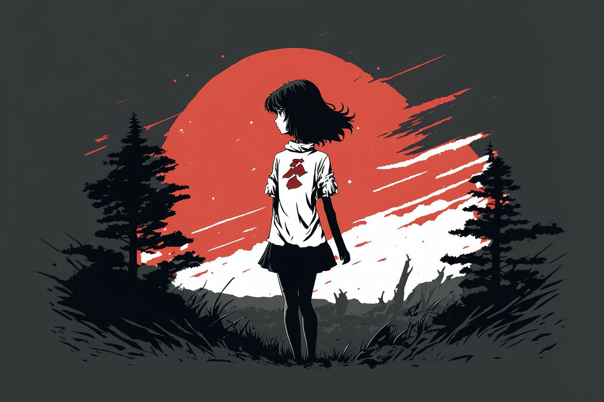
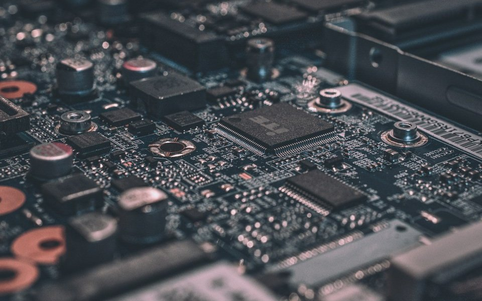

创新无界
我们鼓励突破常规思维，勇于尝试新的技术和创意，不断探索二次元文化与科技融合的可能性。
从 Minecraft 社区出发，走向文化与技术的交汇处。

01 / OUR STORY
森韵次元的创始团队由一群热爱二次元文化和科技创新的年轻人组成。我们注意到，尽管二次元文化在年轻人中越来越受欢迎，但属于二次元的净土和平台却近乎于无。
2024年，我们怀揣着将二次元文化与平台完美结合的梦想，创立了森韵次元。从最初的Mc服务器，到如今拥有超过13+开发团队的科技企业，我们始终坚持初心，致力于打造独特的二次元平台。
七年来，我们参与了各个领域的圈子，包括Vup、术圈、ai音乐、UI设计、MC等复杂的圈子，这些经验与调研为我们带来了全新的体验和乐趣。未来，我们将继续探索更多可能性，创造更多令人惊喜的产品。
02 / OUR VALUES
指引我们前行的核心理念
我们鼓励突破常规思维，勇于尝试新的技术和创意，不断探索二次元文化与科技融合的可能性。
我们始终将用户需求放在首位，倾听用户声音，不断优化产品体验，为用户创造真正的价值。
我们热爱二次元文化和科技创新，这份热爱和激情驱动我们不断前行，创造更多精彩。
03 / OUR MISSION
森韵次元致力于通过创新科技连接二次元与现实世界，为用户创造更加丰富、有趣、便捷的数字生活体验。我们希望让科技产品更有温度，让二次元文化更加普及，让每一位用户都能在我们的产品中找到惊喜与快乐。
04 / OUR JOURNEY
2018年
森韵次元前身“Oursky”由创始人“冬月”一人创立，主营Mc服务器。
2022年
结识了目前的常驻运维“Vxtls”，并开始积累资金。
2024年
在24年年初，有了制作一个二次元平台的想法，购买了项目搭载的物理服务器。

2024年末
年末结识合伙人，一拍即合，创立森韵次元。成立公司。
2025年
将核心团队扩展至4人，开发团队扩展至13人，团队欣欣向荣。
2025年末
项目在初次调研完毕后，经过商讨，决定制作森韵次元坞的PC端和移动端，并且将中心迁移至术力口方向。
2026年
经过半年的研发，成功地开发出了AI全链路，实现歌曲授权—歌词增入—歌曲入库的全流程。并且开发出术曲识别、歌词识别、歌姬识别三大模型。
2026年末
项目预计在12月正式全量上线，包含web、PC、移动端，敬请期待。